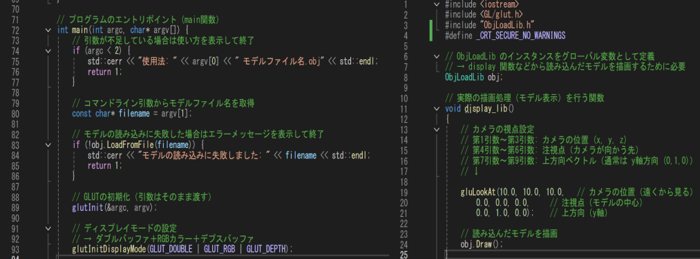
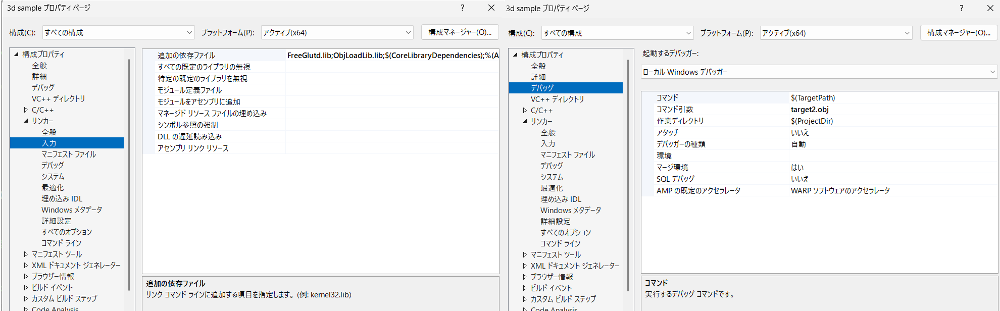

3Dモデル（オブジェクト）を表示するための描画のため自作ライブラリを使用し、
リソースの読み込みから表示までを一貫して制御するプロジェクトです。既存の3Dモデルデータ（.objファイル）
を利用し、自作関数内での「引数チェック」を通じて、指定したモデルを呼び出し、メイン関数に渡す仕組みを実装しました。
以下の画像は、実行結果になります。
開発環境：Visual Studio
使用言語：C++
使用技術：OpenGL / GLUT
その他：自作ライブラリ（ObjLoadLib）、AIツール（ChatGPT）
自作ライブラリを作成し、自作ライブラリを使用する方法と、それに合わせて、
オブジェクトモデルの呼び出し方法を理解することが目的です。
全頂点のXYZ座標から最小値・最大値（AABB）を算出し、モデルの空間範囲を取得できる自作ライブラリの基盤機能です。

コマンドライン引数の引数チェックをメイン関数で呼び出し、実装しました。
また、ライブラリのインスタンスをグローバル変数として定義し、汎用性重視で、呼び出しやすいようにしました。
プロジェクトのプロパティから、自作ライブラリや既存のライブラリの追加の方法を学び、
コマンド引数から特定の.objファイルを追加して使うことを学びました。

技術習得の過程において、特定の情報源に頼るのではなく、公式ドキュメントから定評のある
技術解説サイトまで、調べぬく姿勢の重要性を再認識しました。また、AIツールを活用する際も、
出力されたコードを単に利用するのではなく、自らの理解を深めるための教材として向き合うことを強く意識しました。